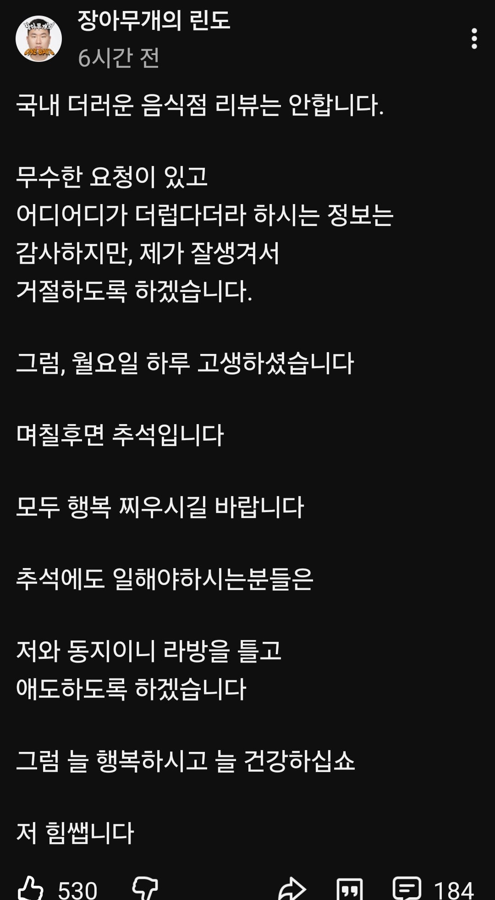

150 · 6 · 22 시간 전 · 원문

국내꺼 하라는 사람들은 했다가 무슨 소송을 당하라고 ㅋㅋ
수집 당시 댓글 6개
↳ 답글 · 케이시스 · 14 시간 전
사촌간볼빨기 · 17 시간 전
아 하필 잘생겨가지고 아쉽네
MG · 17 시간 전
동그리오말차중독자는 국내꺼 엄청돌려돌려까는거있던데 ㅋㅋㅋ
네비두라 · 15 시간 전
개 더러운 돈까스 올라온게 이채널이었구나
원종단들 단체로 지랄할만하네
아침밥 · 10 시간 전
아 갓 몽키스패너
붐업단2 · 8 시간 전
국내꺼를 하면 공익제보지
아 하필 잘생겨가지고 아쉽네